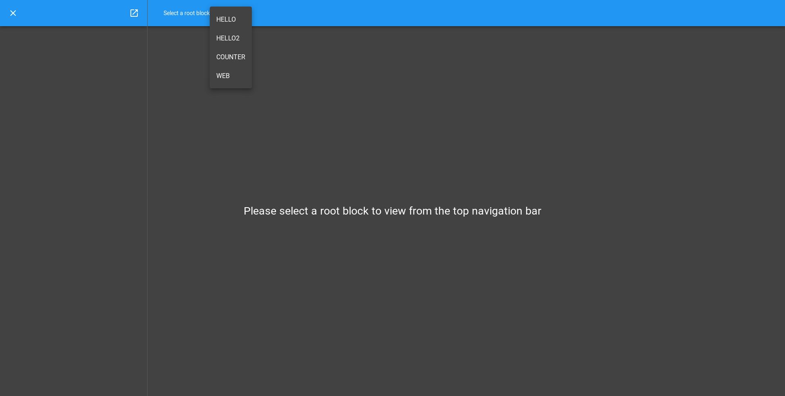
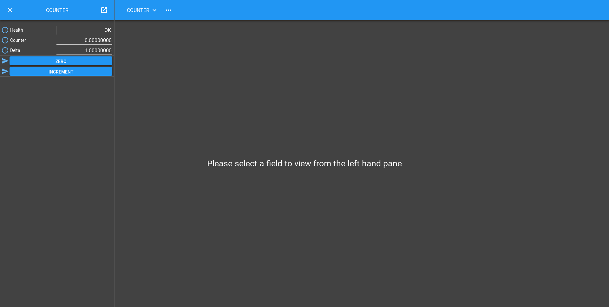

Counter Tutorial
You should already know how to run up a Malcolm Process with some Blocks that are each composed of Controller with Parts, and have seen a Part that exposes a Method. Now we will look at a Part that exposes an Attribute as well.
Let’s take the example of a Counter. It contains:
a writeable Attribute called
counterwhich will keep the current counter value.a writeable Attribute called
deltawhich will keep the amount to increment the counter value by.a Method zero() which will set
counter = 0.a Method increment() which will set
counter = counter + delta.
The block definition in ./malcolm/modules/demo/blocks/counter_block.yaml
looks very similar to the hello_block example in the previous tutorial:
- builtin.parameters.string:
name: mri
description: Malcolm resource id of the Block
- builtin.defines.docstring:
value: Hardware Block simulating a single float64 counter
- builtin.controllers.BasicController:
mri: $(mri)
description: $(docstring)
- demo.parts.CounterPart:
name: counter
It creates the Methods and Attributes you would expect:
Creating Attributes in a Part
Let’s take a look at the definition of CounterPart in
./malcolm/modules/demo/parts/counterpart.py now:
from typing import Optional
from malcolm.core import (
AttributeModel,
NumberMeta,
Part,
PartRegistrar,
Widget,
config_tag,
)
class CounterPart(Part):
"""Defines a counter `Attribute` with zero and increment `Method` objects"""
#: Writeable Attribute holding the current counter value
counter: Optional[AttributeModel] = None
#: Writeable Attribute holding the amount to increment() by
delta: Optional[AttributeModel] = None
def setup(self, registrar: PartRegistrar) -> None:
super().setup(registrar)
# Add some Attribute and Methods to the Block
self.counter = NumberMeta(
"float64",
"The current value of the counter",
tags=[config_tag(), Widget.TEXTINPUT.tag()],
).create_attribute_model()
registrar.add_attribute_model("counter", self.counter, self.counter.set_value)
self.delta = NumberMeta(
"float64",
"The amount to increment() by",
tags=[config_tag(), Widget.TEXTINPUT.tag()],
).create_attribute_model(initial_value=1)
registrar.add_attribute_model("delta", self.delta, self.delta.set_value)
registrar.add_method_model(self.zero)
registrar.add_method_model(self.increment)
def zero(self):
"""Zero the counter attribute"""
self.counter.set_value(0)
def increment(self):
"""Add delta to the counter attribute"""
self.counter.set_value(self.counter.value + self.delta.value)
Again, we start by subclassing Part, but this time we define a couple of
AttributeModel instances. By convention, we declare class attributes with
the right names and value of None so that we don’t have to override
__init__. It also makes the doc comments for these attributes (which
appear on the line before the definitions) more legible.
Note
We are using a type comment to declare the type of this attribute
This is not strictly necessary at runtime, but it is good practice so that an IDE like PyCharm can tell what type the attribute is, and warn you if you try to use it in an unsupported way.
We move onto the setup method. First, we create two AttributeModel
instances. To make an AttributeModel we first need to make a meta object.
In our example we want a float64 NumberMeta counter as we want to
demonstrate floating point numbers. If our counter was an integer we could
choose int32 or int64. The actual AttributeModel is returned by the
create_attribute_model() method of this meta so that the correct
type of AttributeModel can be chosen by the particular type of Meta object we
specify. We specify a number of Tags on the Meta object that give
some hints about how this Attribute will be used. In this case, we specify a
config_tag to say that this field is a configuration variable that will be
marked for load/save, and a Widget tag that tells a GUI which widget to use
to display this Attribute.
The rest of the setup function looks very similar to the one in the previous
tutorial, but this time we also register our AttributeModel so it appears in
the parent Block. We do this by calling
add_attribute_model() with 3 arguments:
"counter": the name of the Attribute within the Blockself.counter: the AttributeModel instanceself.counter.set_value: the function that will be called when someone tries to “Put” to the Attribute. If one isn’t supplied then the Attribute will not be writeable
We then do the same with delta to register a second Attribute.
Note
We are producing an AttributeModel rather than an Attribute.
Attribute is a View, allowing users of the Block to make requests using
methods like put_value(). The users can either be
external clients or Blocks further up the hierarchy.
AttributeModel is a Model, keeping the definitive version of the data,
with methods like set_value() that allow the owner of
that data to respond to requests.
Each user gets their own Attribute view of a single underlying
AttributeModel that holds the actual data.
In the two methods (zero and increment), we make use of the counter
AttributeModel. We can get its value by using the value attribute and set
its value by calling the set_value() method. This method
will validate the new value using the VMeta object we created in __init__
and notify any interested subscribers that something has changed.
Visualising the Block with the GUI
There is a web GUI that ships with pymalcolm, called malcolmjs. We can use it to play with this counter block and see how it works. Let’s launch our demo again:
[me@mypc pymalcolm]$ pipenv run imalcolm malcolm/modules/demo/DEMO-HELLO.yaml
Loading malcolm...
Python 3.7.2 (default, Jan 20 2020, 11:03:41)
Type 'copyright', 'credits' or 'license' for more information
IPython 7.19.0 -- An enhanced Interactive Python. Type '?' for help.
Welcome to iMalcolm.
self.mri_list:
['HELLO', 'HELLO2', 'COUNTER', 'WEB']
# To create a view of an existing Block
block = self.block_view("<mri>")
# To create a proxy of a Block in another Malcolm
self.make_proxy("<client_comms_mri>", "<mri>")
block = self.block_view("<mri>")
# To view state of Blocks in a GUI
!firefox localhost:8008
In [1]:
Then open http://localhost:8008 in your favourite browser and click on the “…” button next to “Select a root block” to select the COUNTER Block:
You will now see a representation of the COUNTER Block appear in the left hand pane and the URL change to http://localhost:8008/gui/COUNTER:
If you try clicking the increment button a few times you should see the value increase, the reset button should zero it and clicking on the counter value should let you enter a number yourself. Clicking on the information icon next to the counter value will give you a history of the values that the Attribute has been set to.
Notice that the value we set counter to will also be validated by the meta
object we created, so you can enter 34.5 into the counter value, but if you
entered foo, you will get a GUI that looks like this:
And a message on the console:
malcolm.core.request: Exception raised for request Put(id=40, path=Array([u'COUNTER', u'counter']), value=u'foo', get=False)
Traceback (most recent call last):
File "./malcolm/../malcolm/core/controller.py", line 142, in _handle_request
responses += handler(request)
File "./malcolm/../malcolm/core/controller.py", line 192, in _handle_put
value = attribute.meta.validate(request.value)
File "./malcolm/../malcolm/core/models.py", line 641, in validate
cast = self._np_type(value)
ValueError: could not convert string to float: foo
Conclusion
This second tutorial has taken us through creating Attributes in Blocks and
showed us a little bit of the error checking that VMeta instances
give us. Now we have a CounterPart, we could combine it with the HelloPart
from the previous tutorial, creating a Controller with 2 Parts that has
counter and greet() functionality. In the next tutorial we will see how
we can use this composition to control multiple child blocks with one parent
Block.